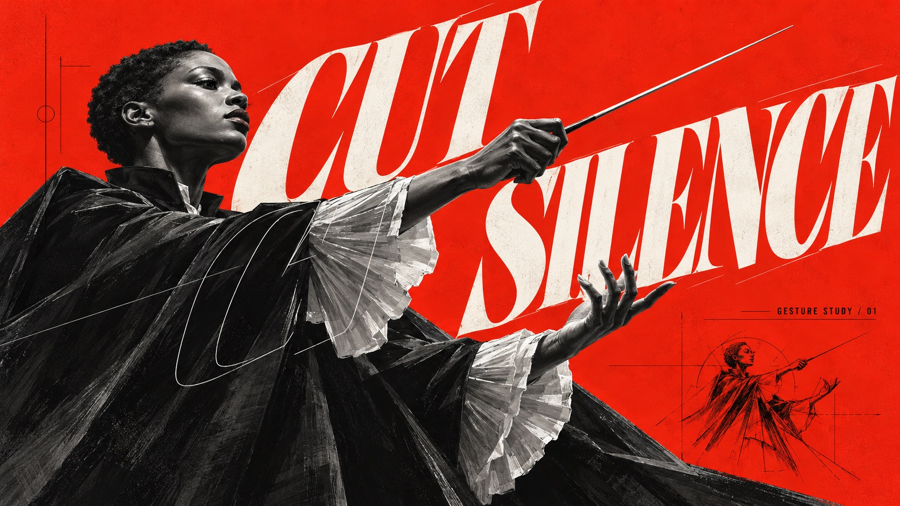
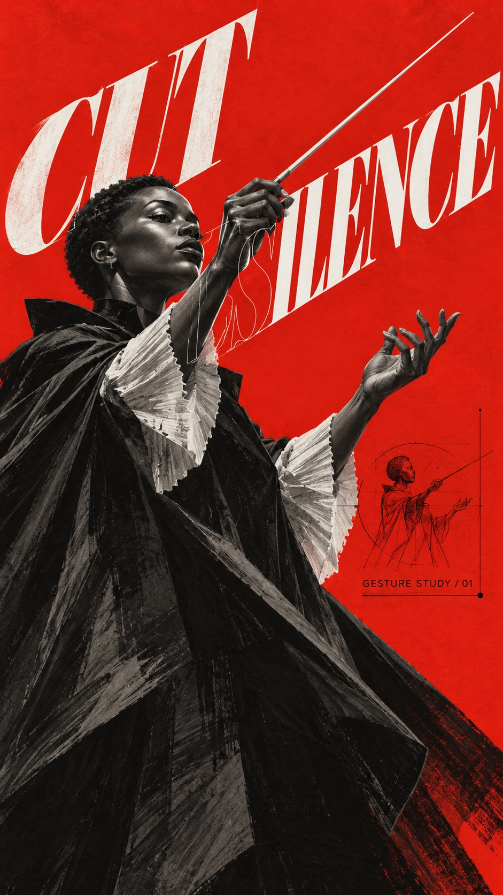
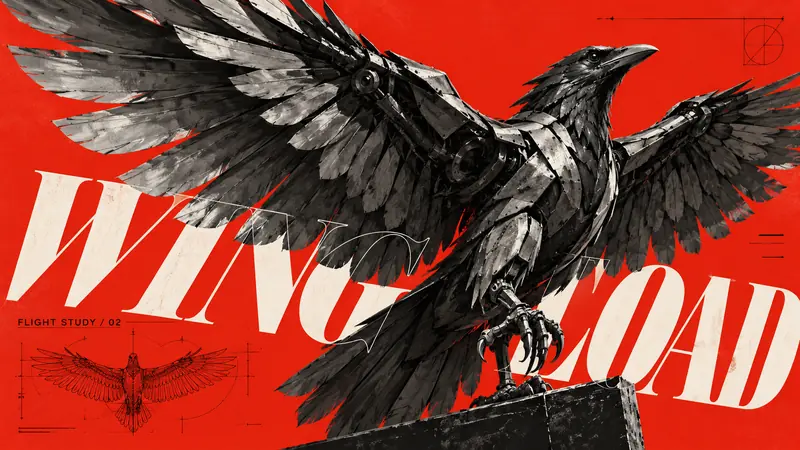
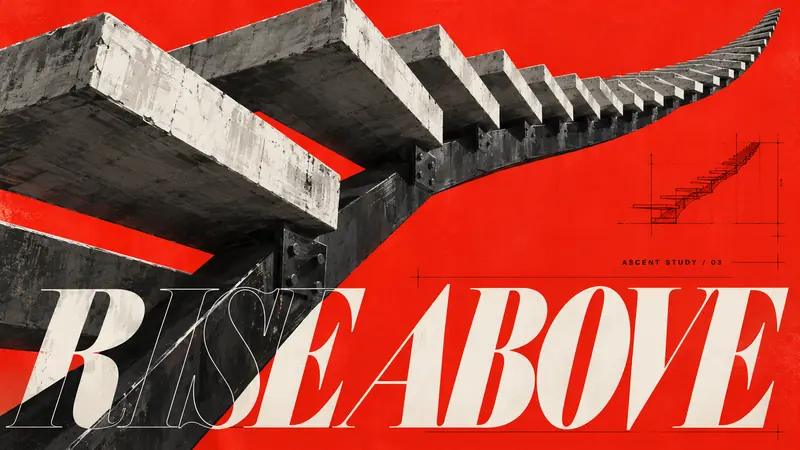
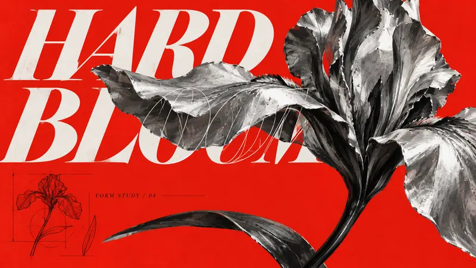

Type Posters · AI image style prompt
Scarlet Outline Monument
Vermilion-red concept posters: grey sculptural paintings in dramatic perspective, giant slanted serif type split into solid letters behind and thin outlines in front, with black annotations.


4 example cases
Same style.json, different subjects. Each case's values are in the examples section of the JSON.



What this style does
Vermilion-red backgrounds with cool grey and black-and-white sculptural concept painting, exaggerated perspective and giant slanted serif type; solid letters hide behind the subject, thin outline letters cross the foreground, with sparse black engineering annotations.
Signature traits
- Saturated vermilion-red flat field surrounds a predominantly cool grayscale, near-black and chalk-white focal subject; red stays graphic rather than becoming atmospheric scenery.
- Monumental foreshortening and assertive cropping, with hard-lit sculptural volumes painted in angular charcoal-like strokes rather than a glossy photographic render.
- Oversized sharply cut italic display serif capitals create a directional force; solid off-white lettering passes behind the subject while a thin white outline echo crosses selected foreground areas.
- Sparse black technical annotations and fine diagram lines supply scale contrast without becoming a dense interface.
- Subject, material, gesture, silhouette and spatial logic change with each theme; let these shape the graphic interaction.
- Letter stacking, slope, baseline and cropping may adapt to the subject; preserve a clearly readable complete main title somewhere in the display system.
style.json
{
"schema_version": "2.2",
"style_version": "1.0.0",
"style_name": "Scarlet Outline Monument",
"style_slug": "scarlet-outline-monument",
"style_summary": "Vermilion-red backgrounds with cool grey and black-and-white sculptural concept painting, exaggerated perspective and giant slanted serif type; solid letters hide behind the subject, thin outline letters cross the foreground, with sparse black engineering annotations.",
"environment_variables": {
"ASPECT_RATIO": "9:16 or 16:9",
"STYLE_FIDELITY_ANCHORS": "Prioritized visual identity and design freedoms",
"SOURCE_CONTENT_TO_AVOID": "Source-specific content to replace",
"SUBJECT": "New focal subject and its material/action",
"MAIN_TEXT": "Exact uppercase display title",
"SECONDARY_TEXT": "Exact small technical caption",
"DESIGN_DIRECTION": "Theme-driven relationship between subject and typography",
"PORTRAIT_LAYOUT": "Composition for 9:16",
"LANDSCAPE_LAYOUT": "Independent composition for 16:9"
},
"style_fidelity_anchors": [
"[CORE] Saturated vermilion-red flat field surrounds a predominantly cool grayscale, near-black and chalk-white focal subject; red stays graphic rather than becoming atmospheric scenery.",
"[CORE] Monumental foreshortening and assertive cropping, with hard-lit sculptural volumes painted in angular charcoal-like strokes rather than a glossy photographic render.",
"[CORE] Oversized sharply cut italic display serif capitals create a directional force; solid off-white lettering passes behind the subject while a thin white outline echo crosses selected foreground areas.",
"[CORE] Sparse black technical annotations and fine diagram lines supply scale contrast without becoming a dense interface.",
"[FLEX] Subject, material, gesture, silhouette and spatial logic change with each theme; let these shape the graphic interaction.",
"[FLEX] Letter stacking, slope, baseline and cropping may adapt to the subject; preserve a clearly readable complete main title somewhere in the display system.",
"[FLEX] Place negative red space and the tiny annotation block where they clarify the focal hierarchy; no fixed corner or row count.",
"[FLEX] Recompose portrait and landscape independently around the same idea rather than stretching or cropping one master image."
],
"source_content_to_avoid": [
"The silver bob-haired woman and her exact facial identity",
"The split black-and-white fitted bodysuit and X-shaped belt buckle",
"The original hip-forward fashion pose and exact silhouette",
"All original wording, dates and diamond-state label",
"The source faceted gem diagram and copied marks"
],
"visual_deconstruction": {
"hierarchy": "Focal sculptural silhouette first, huge italic white type second, hairline outline overlap third, black technical captions last.",
"source_observations": "Reference uses an extreme low angle, diagonal letter bands, cool pale hair and near-black tailoring against vermilion. Those content and exact placement choices are replaceable.",
"graphic_grammar": "Filled/outline depth switching, hairline technical sketch, miniature ruled metadata."
},
"composition": {
"portrait": "Use each case PORTRAIT_LAYOUT; preserve coherent silhouette and readable main title in vertical directional tension.",
"landscape": "Use each case LANDSCAPE_LAYOUT; open lateral negative space and reshape type flow, keeping subject identity.",
"space": "Flat red ground with no photo set or cinematic scenery; allow subject to break image edges where meaningful."
},
"typography": {
"display": "Angular high-contrast italic serif capitals, large triangular or wedge-shaped cuts, emphatic extended strokes; off-white fill plus single hairline outline echo.",
"support": "Small black condensed sans-serif technical label; exact supplied caption.",
"legibility": "Show complete main title in filled display type; outline echo may be partially occluded. No invented large words."
},
"color_palette": {
"vermilion": "#CB2D1B",
"charcoal": "#111515",
"chalk": "#ECEFEB",
"steel_gray": "#8B9496",
"proportions": "Red roughly 40–55%, grayscale subject roughly 35–50%, white lettering roughly 10–15%; adjust to preserve hierarchy."
},
"image_treatment": {
"medium": "Painterly graphic concept illustration: hard raking light, deep black shadows, cold gray midtones and chalk highlights.",
"texture": "Fine restrained print grain across red ground; visible medium-scale dry angular brush and scratch strokes on subject material, with selective softened painted transitions. Type edges remain deliberate; no heavy grunge or noisy photocopy damage."
},
"design_rules": [
"Let subject action or structure determine the typography movement.",
"Use solid and outline type as a depth device, not a separate text box.",
"Keep secondary technical markings sparse and tied to the case structure.",
"Adapt both ratios separately with purposeful red negative space.",
"Copy the supplied main and secondary text exactly; do not add brand marks."
],
"do": [
"Emphasize hard light and sculptural contrast.",
"Keep a recognizably shared red, black, gray and white family.",
"Make all four themes visibly distinct in silhouette and spatial logic."
],
"avoid": [
"Repeated fashion-model compositions with exchanged props.",
"Smooth glossy CGI, neon gradients and busy cyberpunk scenery.",
"Copied source wording, costume, gem diagrams or identity marks."
],
"prompt_template": "Create a finished {ASPECT_RATIO} editorial art poster, use case stylized-concept. Visual system: {STYLE_FIDELITY_ANCHORS}\nNEW SUBJECT: {SUBJECT}\nDESIGN INTENTION: {DESIGN_DIRECTION}\nFor 9:16 use: {PORTRAIT_LAYOUT}\nFor 16:9 use: {LANDSCAPE_LAYOUT}\nChoose only the layout matching the requested ratio. Exact large title: \"{MAIN_TEXT}\". Exact small caption: \"{SECONDARY_TEXT}\". Design oversized sharp-cut italic serif white display lettering, with a filled title behind selected subject regions and a delicate outline echo over the foreground; ensure a complete readable title. Add one small black engineering sketch based on this subject and sparse fine rules. Flat vermilion background, cool grayscale subject, deep charcoal shadows and chalk white highlights. Medium: painterly graphic concept illustration under hard raking light. Texture: fine restrained print grain across red ground; visible medium-scale dry angular brush and scratch strokes on subject material with selective soft painted transitions. Deliberate type edges; no heavy grunge. Source-specific content to exclude: {SOURCE_CONTENT_TO_AVOID}. No logos, watermark, signature, QR code, extra large text, glossy CGI, neon, photographic scenery or crowded interface. Output one finished poster, no mockup or contact sheet.",
"negative_prompt": "Copied silver bob-haired woman, split bodysuit, X belt buckle, original wording or gem diagram, logo, watermark, QR code, glossy CGI, neon color, busy scene, collage grid, illegible main text, malformed anatomy, repetitive template layout.",
"examples": [
{
"case_name": "cut-silence",
"values": {
"SUBJECT": "An adult Black female orchestral conductor with closely cropped natural hair, a dramatic matte-black cape and pale pleated cuffs, one hand gripping a thin baton, the other hand conducting with a believable open gesture. Three-quarter profile, sculpted cheekbones, no source costume.",
"MAIN_TEXT": "CUT SILENCE",
"SECONDARY_TEXT": "GESTURE STUDY / 01",
"DESIGN_DIRECTION": "The baton slices a wedge of red silence; the two words separate around the conducting gesture like a musical pause. The cape is a deep triangular ink mass.",
"PORTRAIT_LAYOUT": "Low-angle waist-up conductor in lower two-thirds, arm and baton projecting toward upper right; CUT and SILENCE on rising offset diagonals in the red wedge, outline echo grazing cape.",
"LANDSCAPE_LAYOUT": "Conductor anchored to the left with forearm and baton reaching across the center; large title spans open right field along the baton gesture, diagram small at lower right."
}
},
{
"case_name": "wing-load",
"values": {
"SUBJECT": "A monumental engineered raven made of brushed steel feather plates and black articulated joints, wings unfurling with a coherent bird anatomy, one claw released from a narrow dark perch. No person.",
"MAIN_TEXT": "WING LOAD",
"SECONDARY_TEXT": "FLIGHT STUDY / 02",
"DESIGN_DIRECTION": "The expanding wing fan establishes radial tension against long diagonal typography; a visibly engineered bird becomes a wind-loaded architectural object.",
"PORTRAIT_LAYOUT": "Bird torso near lower center, one giant feathered wing foreshortened upward and left, other partly folded; title sits in open red counter-wedge, outline letters cross feather tips.",
"LANDSCAPE_LAYOUT": "Wide nearly full wingspan projects across upper and middle image; bird body off-center right, WING LOAD aligned to the lower sweep with red pockets between wings and letters."
}
},
{
"case_name": "rise-above",
"values": {
"SUBJECT": "An impossible yet structurally coherent monumental cantilever staircase, pale raw concrete treads anchored into a single blackened steel spine, viewed from below; no people or building facade, only the sculptural stair structure.",
"MAIN_TEXT": "RISE ABOVE",
"SECONDARY_TEXT": "ASCENT STUDY / 03",
"DESIGN_DIRECTION": "The staircase and letterforms form two competing upward rhythms, with red voids between treads and the outline word behaving like an unbuilt continuation.",
"PORTRAIT_LAYOUT": "Nearest concrete tread dominates bottom left, staircase ascends toward upper right and recedes in scale; large title runs in the red left-side wedge while outline strokes bridge negative gaps.",
"LANDSCAPE_LAYOUT": "Side-underneath view with staircase sweeping from left foreground to upper right distance; giant title occupies lower open band, counters echoing the red voids between treads."
}
},
{
"case_name": "hard-bloom",
"values": {
"SUBJECT": "A single sculptural iris flower forged from folded silver sheet metal, three sweeping outer petals and upright inner petals, charcoal creases, a slender bent black stem and one blade-like leaf. Botanical morphology remains recognizable. No vase or person.",
"MAIN_TEXT": "HARD BLOOM",
"SECONDARY_TEXT": "FORM STUDY / 04",
"DESIGN_DIRECTION": "Brittle industrial metal opens like soft botanical tissue. Petal folds interrupt the rigid title and carve a curved red negative-space aperture.",
"PORTRAIT_LAYOUT": "Close towering flower head in upper center, bent stem descending to lower right; HARD and BLOOM split around the stem and petal mass with an outline echo tracing through the lower petal.",
"LANDSCAPE_LAYOUT": "Extreme side close-up of iris head on right, one long silver petal extending left toward the large title in open red; thin stem curves beneath the words and balances the composition."
}
}
],
"category": "Type Posters"
}